Summary. For every GPS point we generate up to 8 candidate road arcs within 50 m, describe each (point, arc) pair with 13 engineered features, and train a binary classifier that estimates the probability that the arc is the true one. Five models from five algorithm families were compared; LightGBM was selected and tuned with Bayesian optimisation (Optuna TPE). Its probabilities are the emission scores of an HMM whose transitions use shortest-path distances on the road network; Viterbi decoding returns a connected route. The system is served by a FastAPI backend (laptop 1) to a browser UI (laptop 2). On the 10 student-testing trips, observation-level Top-1 accuracy is 88.8% for the classifier alone and 90.5% after HMM decoding, with route continuity rising from 93.1% to 96.7%.
Partitions: train = 80 trips (fitting, cross-validation, Bayesian optimisation), student_test = 10 trips (model comparison, decoder tuning). The 10 evaluator trips were not used during development. All EDA below uses train unless stated. Code: data_processing/01_eda.ipynb, data_processing/io.py.
| File | Columns (no header) | Meaning |
|---|---|---|
.track | longitude, latitude, timestamp (s) | Noisy GPS fixes of the vehicle (input). |
.nodes | longitude, latitude | Road-network nodes; row index = node id. |
.arcs | from_node, to_node | Directed road segments; row index = arc id. A two-way street is two arcs. |
.route | arc_id | Ordered reference arcs driven. No timestamps, so one arc covers many GPS points. |
Each trip carries its own road network. A GPS row does not correspond to a route row, so per-point labels had to be derived (see preprocessing).
| Partition | Trips | GPS points | Points / trip (mean, max) | Arcs / trip (min–max) | Missing values | Duplicate timestamps | Out-of-order timestamps | Gaps > 5 s |
|---|---|---|---|---|---|---|---|---|
| train | 80 | 208,417 | 2,605 / 19,313 | 649 – 307,392 | 0 | 0 | 0 | 1,216 |
| student_test | 10 | 19,160 | 1,916 / 3,958 | ≤ 56,027 | 0 | 0 | 0 | 44 |
.route arc ids exist in the corresponding .arcs file.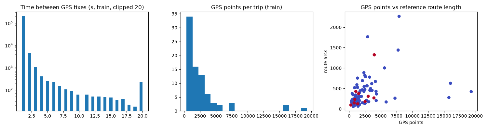
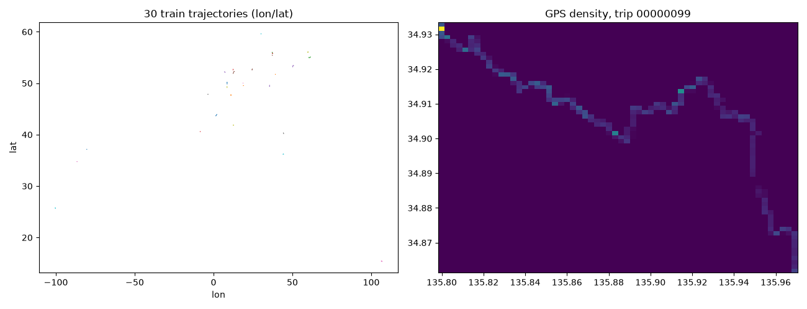
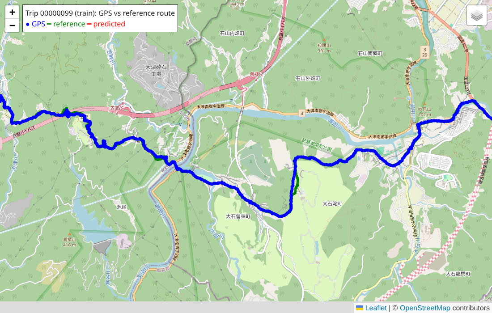
io.clean_track): sort by timestamp, drop NaN rows and duplicate timestamps, drop points more than ~1 km outside the network's bounding box.geo.Projector): longitude/latitude are angles, so Euclidean distance in degrees is wrong. Each trip is projected to its own UTM zone, chosen from the median of its road nodes (EPSG 326xx/327xx), giving metres with <0.1% error. A first version used one fixed zone; on trips far from that zone distances were off by 14–57%, which we fixed after noticing the global spread.candidates.Network): points are sampled every 15 m along every arc into a KD-tree; for each GPS point we take arcs with a sample within 65 m, compute the exact point-to-segment distance and keep the K = 8 nearest arcs within R = 50 m.candidates.label_points): dynamic-programming alignment of the GPS sequence to the ordered route (monotonic: the route index can only stay or advance by ≤ 20 arcs per fix), minimising total point-to-arc distance. A greedy pointer used first got lost on trip 8 (41% → 2% candidate-miss rate after the change). Candidate rows are labelled 1 if the arc equals the point's aligned reference arc.StandardScaler fitted on train only, inside the pipelines of LogReg, KNN and MLP.Candidate miss rate (true arc not among the candidates): 1.85% on clean train trips, 0.41% on student_test. This is the ceiling for any classifier. Result: 1,084,912 candidate rows from train, 16.9% positive.
Problem framing: one row per (GPS point, candidate arc), binary target. Arc ids differ in every trip, so they cannot be classes; geometric features of each candidate generalise across trips, and the per-candidate probability is exactly what the HMM needs as an emission score. Observed patterns that drove the features: noise is mostly a few to tens of metres; ~95% of streets are two-way, so position alone cannot pick the direction; parallel roads and junctions create near-ties; heading is unreliable when the vehicle is slow.
| Feature | Why | Gain share (final LightGBM) |
|---|---|---|
heading_diff | Smoothed GPS bearing vs arc bearing (0–180°): separates the two directions of a two-way street and parallel roads | 26.6% |
dist_rank | 0 = nearest candidate; relative closeness matters in dense areas | 19.9% |
dist_gap_nearest | How much farther than the nearest candidate (m) | 19.6% |
off_end | Point projects beyond the arc's ends, so it probably belongs to the neighbouring arc | 11.5% |
arc_length | Short arcs at junctions are easily confused | 6.0% |
proj_frac | Position of the projection along the arc (0–1) | 4.7% |
dist | Perpendicular distance to the arc (m), the main noise signal | 3.3% |
speed | Distance since previous fix / dt; low speed means unreliable heading | 2.5% |
conn_prev_nearest | Arc continues from the previous point's nearest arc: cheap sequential context | 2.3% |
in_deg, out_deg | Junction complexity around the arc | 1.4%, 1.2% |
n_cand | Number of arcs within 50 m: local ambiguity | 0.9% |
dt | Seconds since previous fix; reliability after gaps | 0.2% |
Not used as features: raw longitude, latitude and timestamp (they identify where/when a trip is and do not generalise) and trip/point/arc identifiers. No engineered feature was dropped after training. dist has low gain because its information is largely carried by dist_rank and dist_gap_nearest; dt is nearly constant (94% of steps are 1 s).
Code: model_training/train_models.py, model_evaluation/evaluate.py, model_evaluation/plots.py. Logs: results/model_comparison.csv, results/cv_folds.csv, results/train_log.txt. Seed 42.
Protocol. 5-fold GroupKFold by trip on the 78 clean train trips (consecutive GPS points are near-duplicates, so mixing a trip across folds would leak), then refit on all train and evaluate on the 10 student_test trips. Class imbalance (16.9% positives) is handled with class weights. Primary metric: observation-level Top-1 accuracy on student_test: for each GPS point the candidate with the highest predicted probability is compared with the reference arc. This is what the route depends on. Macro-F1 (threshold 0.5) and log loss are secondary; log loss matters because the probabilities become HMM emissions.
| Model | Algorithm family | Key configuration | CV macro-F1 (±std) | Top-1 accuracy | Route continuity | Student-test macro-F1 | Log loss (test) | Inference (ms / 1k rows) |
|---|---|---|---|---|---|---|---|---|
| Logistic Regression | Linear / probabilistic | C=1, L2, balanced, scaled | 0.900 ± 0.011 | 0.8695 | 0.932 | 0.891 | 0.190 | 0.10 |
| KNN | Instance-based | k=25, distance-weighted, scaled, 150k-row subsample | 0.923 ± 0.012 | 0.8639 | 0.931 | 0.918 | 0.300 | 314.6 |
| Random Forest | Ensemble (bagging) | 200 trees, depth 16, min leaf 5, balanced | 0.921 ± 0.013 | 0.8694 | 0.930 | 0.914 | 0.144 | 3.06 |
| LightGBM | Boosting | 400 trees, lr 0.05, 63 leaves, subsample 0.8 | 0.917 ± 0.012 | 0.8703 | 0.932 | 0.908 | 0.150 | 6.16 |
| MLP | Neural network | 2 hidden layers (64, 32), ReLU, Adam, early stopping, 400k-row subsample | 0.924 ± 0.012 | 0.8633 | 0.933 | 0.918 | 0.124 | 0.55 |
1. Why suitable? A transparent baseline that directly outputs probabilities via the sigmoid, which the HMM needs. It tests how far a linear combination of distance and heading goes. 2. Strengths / limitations: fastest inference (0.10 ms per 1k rows), well-behaved probabilities, interpretable coefficients; but it cannot represent interactions such as “close but pointing the wrong way” or “heading only matters at speed”, which this task is full of. 5. Hyperparameters: C = 1.0, L2 penalty, lbfgs solver, max_iter 1000, class_weight balanced; features standardised. 6. Loss: binary cross-entropy (log loss) + L2 penalty. 7–8. Student-test: Top-1 0.8695, macro-F1 0.891, log loss 0.190, precision 0.739, recall 0.930 (the balanced weights favour recall). 9. Fit: slight underfitting: it has the lowest CV macro-F1 (0.900; folds 0.882–0.913) and the lowest test F1, while CV and test are close (0.900 vs 0.891), so the gap is due to the model's limited capacity, not overfitting.
1. Why suitable? Map-matching situations repeat (similar distance, heading and junction structure), so similar feature vectors should have similar labels. 2. Strengths / limitations: no distributional assumptions and non-linear boundaries; but prediction cost grows with the training set (314.6 ms per 1k rows, ~60× LightGBM), it needs feature scaling, and its probabilities are coarse vote shares. 5. Hyperparameters: k = 25, weights = distance, Euclidean metric on standardised features; fitted on a random 150,000-row subsample of each training split for tractable prediction time. 6. Objective: none (lazy learner); prediction is a distance-weighted vote. 7–8. Student-test: Top-1 0.8639 (lowest), macro-F1 0.918, log loss 0.300 (worst). 9. Fit: no overfitting (CV 0.923 vs test 0.918, folds 0.902–0.935). The high F1 but worst Top-1 and log loss show that its hard decisions are good while its ranking of candidates within a point is weak, which is what matters for the route.
1. Why suitable? Learns non-linear interactions between distance, heading and topology without scaling, and averaging many trees gives stable probabilities. 2. Strengths / limitations: robust, little tuning needed, good log loss (0.144); but slow to train (91 s) and very large (≈195 MB on disk), which is awkward for deployment, and probabilities are averaged leaf frequencies. 5. Hyperparameters: 200 trees, max_depth 16, min_samples_leaf 5, max_features √13 (default), class_weight balanced_subsample. 6. Objective: each split minimises Gini impurity; trees are bagged on bootstrap samples. 7–8. Student-test: Top-1 0.8694, macro-F1 0.914, log loss 0.144. 9. Fit: no overfitting: depth and leaf-size limits keep CV (0.921, folds 0.902–0.936) and test (0.914) close.
1. Why suitable? State of the art on tabular data: sequential trees correct earlier errors and capture feature interactions, with histogram-based training that is fast on 1 M rows. 2. Strengths / limitations: best Top-1, good log loss, 8 s training, 6 ms per 1k rows, compact model; many interacting hyperparameters, so it benefits from tuning, and it can overfit if leaves grow unchecked. 5. Initial hyperparameters: n_estimators 400, learning_rate 0.05, num_leaves 63, min_child_samples 20, subsample 0.8 (every iteration), colsample_bytree 0.8, reg_lambda 0, is_unbalance = True. 6. Loss: binary log loss, optimised by gradient boosting. 7–8. Student-test: Top-1 0.8703 (best), macro-F1 0.908, log loss 0.150, precision 0.782, recall 0.930. 9. Fit: no overfitting (CV 0.917, folds 0.897–0.930, test 0.908); the row and column subsampling and small learning rate act as regularisation.
1. Why suitable? A flexible non-linear function of the 13 features with smooth probability outputs; tests whether a learned representation beats trees. 2. Strengths / limitations: best log loss (0.124) and CV F1; but sensitive to scaling and initialisation, slower to train (44 s on a 400k-row subsample), and less interpretable. 5. Hyperparameters: 2 hidden layers with 64 and 32 neurons, ReLU, Adam (learning rate 0.001), L2 alpha 1e-4, batch size 512, max 60 epochs, early stopping on a 10% validation split (patience 10); standardised inputs; trained on a 400,000-row subsample. 6. Loss: binary cross-entropy (log loss). 7–8. Student-test: Top-1 0.8633, macro-F1 0.918, log loss 0.124. 9. Fit: no overfitting: training loss fell from 0.150 to 0.099 over 53 epochs while validation accuracy plateaued at 0.963 and early stopping ended training (Fig. 7); CV 0.924 vs test 0.918.
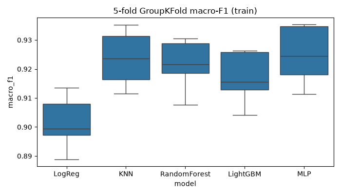
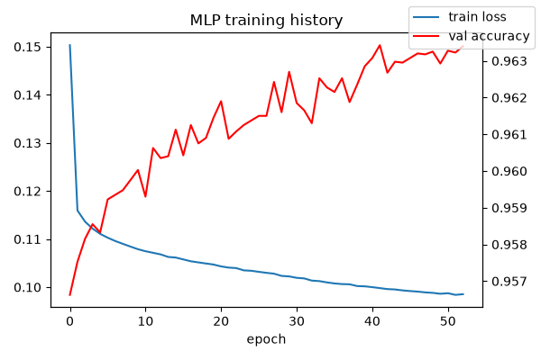
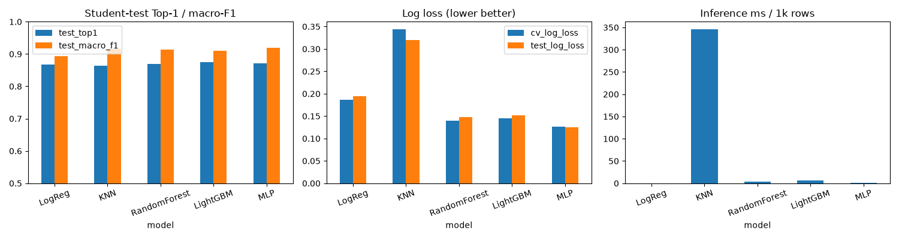
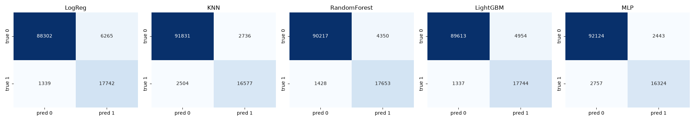
Final model: LightGBM. (i) Highest Top-1, our primary metric. (ii) Log loss 0.150 is close to the best, so its probabilities are usable as HMM emissions. (iii) Stable across folds (std 0.012). (iv) 11× faster to train and far smaller than Random Forest, fast enough to run inside an API request. (v) Its interacting hyperparameters make it the best candidate for Bayesian optimisation. All five models lie within ~0.7 points of Top-1, so selection rests on held-out trips and deployment suitability, never on training accuracy. MLP is the runner-up (best log loss and F1, lower Top-1). KNN is rejected for its slow inference and poorly calibrated probabilities.
Code: hyperparameter_optimisation/tune.py. Record: results/optuna_trials.csv, results/optuna_param_importance.csv, results/tuning_comparison.csv, models/final_config.json.
Method. Optuna with the Tree-structured Parzen Estimator (TPE) sampler, a Bayesian method; no grid or random search was used. TPE splits completed trials into a good group and a bad group by objective value, fits kernel density estimates l(x) and g(x) to the hyperparameters of each group, and samples the next configuration where l(x)/g(x) is largest. Each trial therefore uses the results of all previous trials. The first 10 trials are TPE's startup phase; trial 0 was fixed to the untuned configuration for a fair comparison. Seed 42.
1–2. Hyperparameters and ranges.
| Hyperparameter | Range / distribution | Reason | Untuned | Best (tuned) |
|---|---|---|---|---|
| n_estimators | 100–1000, step 50 | boosting rounds | 400 | 550 |
| learning_rate | 0.01–0.2, log-uniform | step size; trades off with rounds | 0.05 | 0.0317 |
| num_leaves | 15–255, log-uniform | tree complexity, main overfitting control | 63 | 229 |
| min_child_samples | 10–300, log-uniform | minimum rows per leaf (regularisation) | 20 | 59 |
| subsample | 0.5–1.0, uniform | row sampling per tree | 0.8 | 0.597 |
| colsample_bytree | 0.4–1.0, uniform | feature sampling per tree | 0.8 | 0.524 |
| reg_lambda | 0.001–10, log-uniform | L2 penalty on leaf weights | ≈0 (0.001) | 0.683 |
3. Objective. Maximise mean observation-level Top-1 accuracy over 3-fold GroupKFold by trip on the clean train trips. Student_test was used only afterwards, for the tuned vs untuned comparison; evaluator data was never used. 4. Trials: 40 (1,012 s ≈ 17 min on 12 CPU cores, 120 model fits). 5. Best values: trial 25 (table above; CV Top-1 0.8844 vs 0.8836 for trial 0). Importance (Optuna fANOVA): n_estimators 35%, num_leaves 34%, learning_rate 17%, all others < 6%.
6. Did the tuned model outperform the untuned one?
| Model | CV Top-1 | CV macro-F1 | CV log loss | Student-test Top-1 | Student-test macro-F1 | Student-test log loss | Inference (ms / 1k rows) | Train time |
|---|---|---|---|---|---|---|---|---|
| LightGBM untuned | 0.8830 | 0.9174 | 0.1397 | 0.8707 | 0.9082 | 0.1501 | 5.0 | 9.7 s |
| LightGBM tuned | 0.8829 | 0.9210 | 0.1341 | 0.8703 | 0.9111 | 0.1456 | 13.6 | 32.0 s |
Only partly. Top-1 is unchanged within noise (−0.01 to −0.04 points), while macro-F1 improves by about 0.3–0.4 points and log loss drops by about 4% on both CV and student_test. The default configuration was already close to optimal for ranking candidates; tuning mainly improved probability calibration, which benefits the HMM emissions. The cost is 2.7× slower inference (still ~14 ms per 1k rows, well under a second per trip). The tuned trees are larger (229 leaves) but more regularised (60% rows and 52% features per tree, larger leaves, L2 0.68), and log loss improved on held-out data, so tuning did not cause overfitting. We deploy the tuned model.
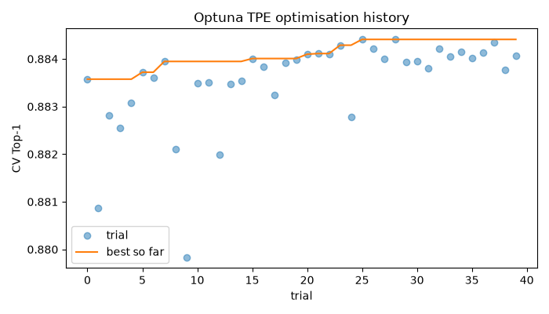
Code: hmm_viterbi/hmm.py, hmm_viterbi/run_hmm.py; results results/hmm_summary_LightGBM_tuned.csv, results/hmm_per_trip_LightGBM_tuned.csv.
1. Hidden states. At each GPS point t, the hidden state is one of its candidate arcs (up to 8). Candidate index and arc id are kept together, so the decoded path maps directly to arc ids. Observations are the GPS points.
2. Emission. log Bt(j) = log P(arc j is correct | features), the tuned LightGBM probability (clipped at 1e-6).
3. Transition. For candidate i at t−1 and j at t: droute = the remaining length of arc i after the projection, plus the Dijkstra shortest path along directed arcs from i's end node to j's start node (cut off at 1.5 km, cached), plus the length up to the projection on j. Staying on the same arc costs the along-arc movement, with up to 5 m backward jitter allowed. With dgps the straight-line distance between the two GPS points, log A(i→j) = −|droute − dgps| / (β · max(1, dt)). If j is unreachable from i, the transition is −∞. Viterbi recurrence: δt(j) = maxi[δt−1(i) + log A(i→j)] + log Bt(j), storing the arg-max back-pointer; the route is recovered by backtracking from the best final state. Log space avoids underflow.
4. Missing candidates and gaps. Points with no arc within 50 m are skipped, and the chain links the neighbouring points using their actual GPS distance. Large gaps are handled by scaling β with dt, so after a gap larger detours are allowed.
5. Disconnected segments. If every transition into point t is −∞, the chain breaks: we count it, restart decoding at t from the emissions alone, and when backtracking join the segments at the previous segment's best final state. Every point still receives an arc, and each segment is connected. This occurred 0.3 times per trip on average on student_test.
6. Did HMM decoding improve the route? Yes (student_test, mean over 10 trips; β swept on student_test):
| Method | Top-1 accuracy | Route continuity | Route F1 (arc set) | Chain breaks / trip | Decode time / trip |
|---|---|---|---|---|---|
| Classifier only (tuned LightGBM) | 0.8875 | 0.9311 | 0.8729 | – | – |
| + HMM, β = 2 | 0.8833 | 0.9745 | 0.9115 | 0.3 | 1.3 s |
| + HMM, β = 10 | 0.9019 | 0.9737 | 0.9063 | 0.3 | 0.8 s |
| + HMM, β = 20 | 0.9050 | 0.9715 | 0.9027 | 0.3 | 0.8 s |
| + HMM, β = 50 (deployed) | 0.9049 | 0.9666 | 0.8990 | 0.3 | 0.9 s |
| Student-test trip | 00000000 | 07 | 09 | 40 | 52 | 56 | 65 | 76 | 77 | 91 |
|---|---|---|---|---|---|---|---|---|---|---|
| Top-1 classifier | 0.945 | 0.926 | 0.868 | 0.936 | 0.966 | 0.897 | 0.842 | 0.906 | 0.710 | 0.879 |
| Top-1 + HMM (β=50) | 0.956 | 0.933 | 0.909 | 0.932 | 0.996 | 0.931 | 0.853 | 0.930 | 0.717 | 0.891 |
| Continuity classifier → HMM | .965→.993 | .996→.999 | .893→.938 | .968→.987 | .946→.962 | .904→.958 | .940→.970 | .893→.947 | .919→.964 | .887→.947 |
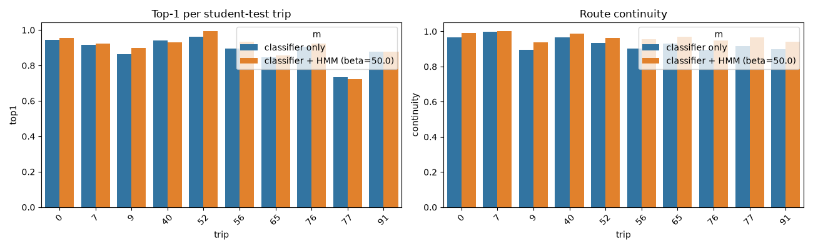
Improvements and failure cases. Continuity improves on all 10 trips, and Top-1 on 9 of 10 (largest gains: trip 52, 96.6% → 99.6%; trip 9, 86.8% → 90.9%). The HMM removes isolated jumps onto side streets and wrong-direction twins, because those are unreachable or need long detours. It does not help where the classifier is wrong for a long stretch. Trip 77 stays at ~71%: a dense city grid where the GPS runs between parallel streets, so a connected but wrong street is consistent with the transitions. On trip 40 Top-1 drops slightly (93.6% → 93.2%) where Viterbi commits to a wrong branch at a junction for a few points. Small β favours smoothness (continuity 0.975) at some cost in Top-1, and large β trusts the classifier more.
Code: visualisations/viz.py (trip_map), called from hmm_viterbi/run_hmm.py and the EDA notebook. Interactive HTML maps: visualisations/maps/ (eda_trip_*.html, clf_*.html = classifier only, hmm_*.html = classifier + HMM, for every student_test trip). Layers: raw GPS (blue markers), nearby road network (grey, arcs within 150 m of the trajectory), reference route (green, wide), predicted route (red, narrow, drawn on top). Each map has a legend box, a LayerControl to toggle layers, and is centred on the trajectory.
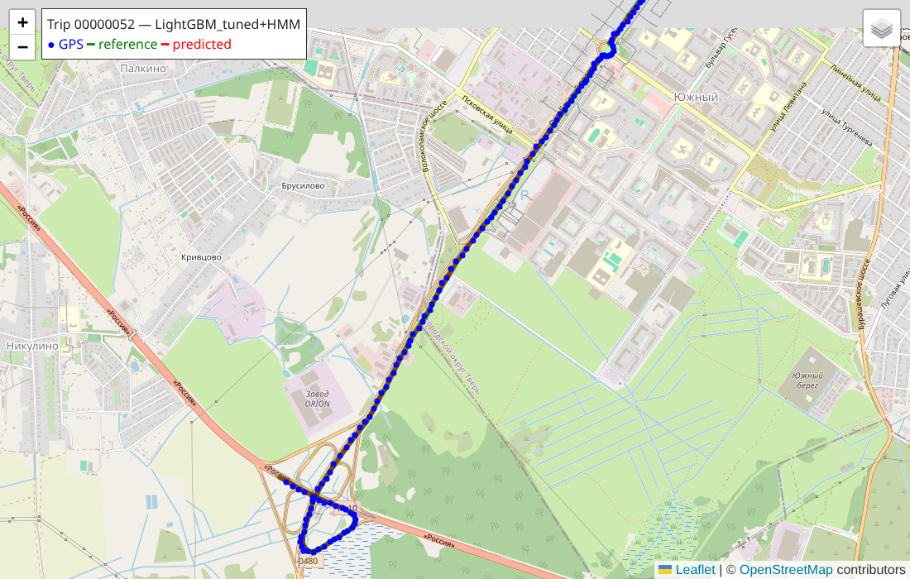
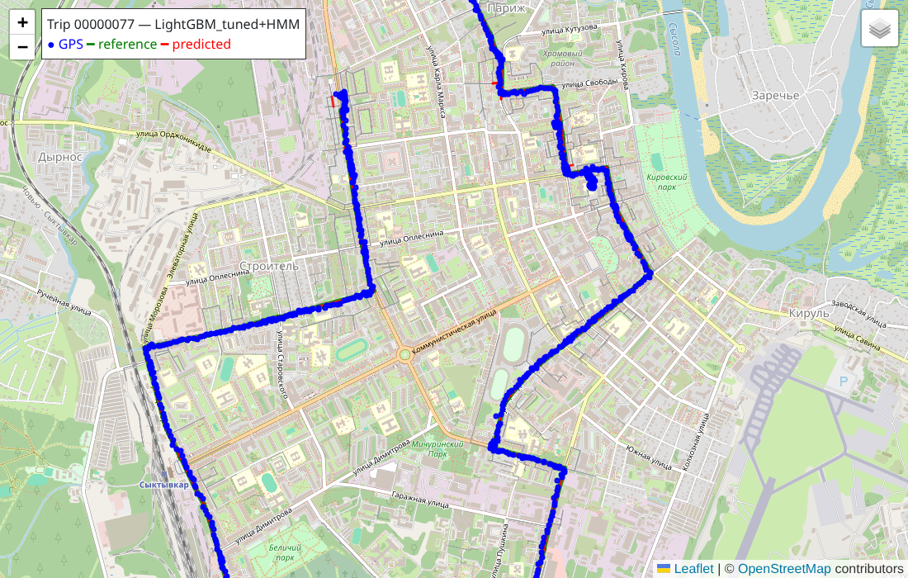
Fig. 3 (Section 2.2) shows the EDA map of a train trip.
Architecture. Laptop 1 runs api/main.py (FastAPI + uvicorn, --host 0.0.0.0 --port 8000), which loads models/final_lgbm.joblib once at startup and reads trips from PATHSNAP_EVAL_DIR. Laptop 2 serves ui/index.html, a static page with Leaflet and fonts bundled, using python -m http.server 5500. The page calls the API over the LAN; CORS is enabled because the two run on different origins. Scripts and instructions are in deployment/.
| Endpoint | Purpose |
|---|---|
GET /health | Status, loaded model, evaluation folder. |
GET /trips | Lists the trip folders found in the evaluation directory (nothing is hardcoded). |
POST /predict {"trip_id"} | Runs clean → candidates → features → LightGBM → Viterbi; returns GPS points, the HMM route and the classifier-only route geometry, arc ids, timing and metrics. |
Ground truth stays server-side. load_trip_dir never reads .route, and predict_trip asserts that the route is absent. Only after prediction does the server read the reference route to compute Top-1, continuity and route precision/recall/F1. The UI receives numbers, never the reference geometry.
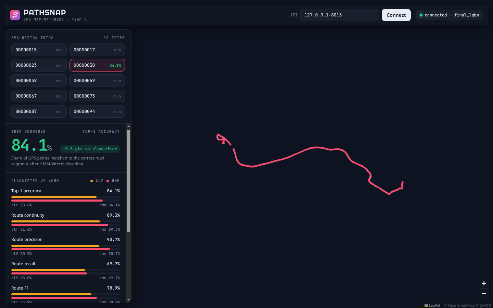
API log on laptop 1 (uvicorn console, evaluator trips):
2026-11-18 16:24:20,759 [PathSnap] loaded model final_lgbm.joblib | eval dir .../eval_data/evaluator_test | HMM {'beta': 50.0}
INFO: Uvicorn running on http://127.0.0.1:8011 (Press CTRL+C to quit)
INFO: 127.0.0.1:41600 - "GET /health HTTP/1.1" 200 OK
2026-11-18 16:24:21,144 [PathSnap] POST /predict trip=00000087 : running pipeline
2026-11-18 16:24:24,727 [PathSnap] trip=00000087 points=1399 | classifier top1=0.9421 | HMM top1=0.9950 continuity=0.9893 route_f1=0.9810 | 3.58s
INFO: 127.0.0.1:41614 - "POST /predict HTTP/1.1" 200 OK
2026-11-18 16:24:24,743 [PathSnap] POST /predict trip=00000030 : running pipeline
2026-11-18 16:24:26,361 [PathSnap] trip=00000030 points=654 | classifier top1=0.7859 | HMM top1=0.8410 continuity=0.8928 route_f1=0.7886 | 1.62s
INFO: 127.0.0.1:41620 - "POST /predict HTTP/1.1" 200 OK
Results on the 10 evaluator trips (run through the API at demo time; these results were not used for any modelling decision):
| Trip | 15 | 17 | 23 | 30 | 49 | 59 | 67 | 73 | 87 | 94 | Mean |
|---|---|---|---|---|---|---|---|---|---|---|---|
| GPS points | 6854 | 1346 | 458 | 654 | 2642 | 1031 | 916 | 1144 | 1399 | 3230 | 1967 |
| Top-1 classifier | .735 | .918 | .948 | .786 | .986 | .957 | .954 | .976 | .942 | .927 | .913 |
| Top-1 + HMM | .707 | .925 | .943 | .841 | .992 | .971 | .926 | .979 | .995 | .905 | .918 |
| Continuity + HMM | .975 | .868 | .974 | .893 | .994 | .924 | .987 | .988 | .989 | .959 | .955 |
| Server time (s) | 6.6 | 3.6 | 0.6 | 1.4 | 2.8 | 2.0 | 0.9 | 1.6 | 2.5 | 3.9 | 2.6 |
Mean Top-1 on unseen evaluator trips (91.8%) is in line with student_test (90.5%), so the pipeline generalises. Continuity improves on every trip; Top-1 improves on 6 of 10.